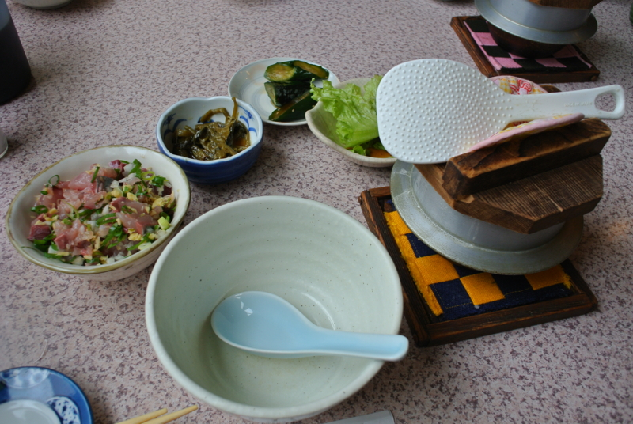
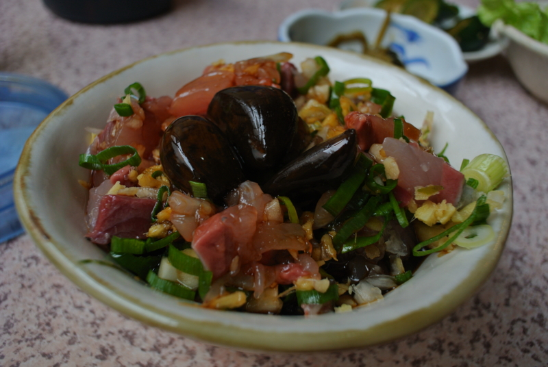
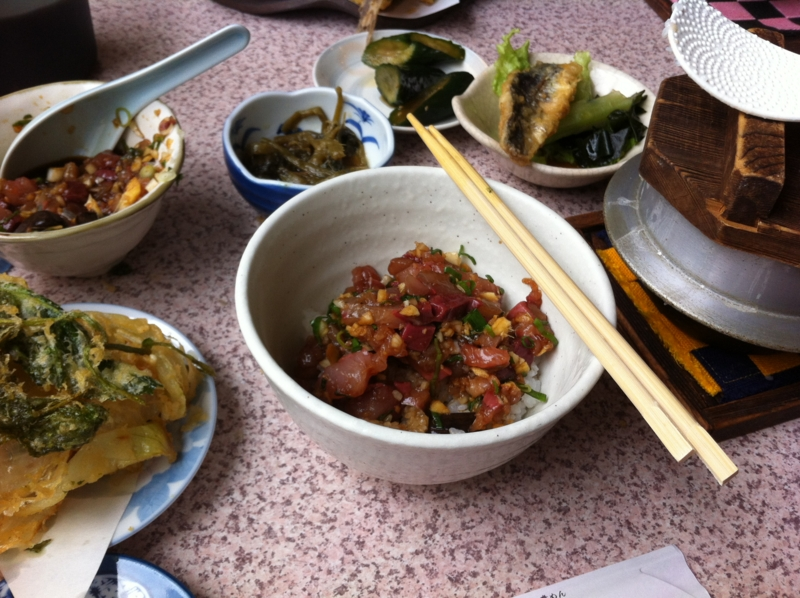
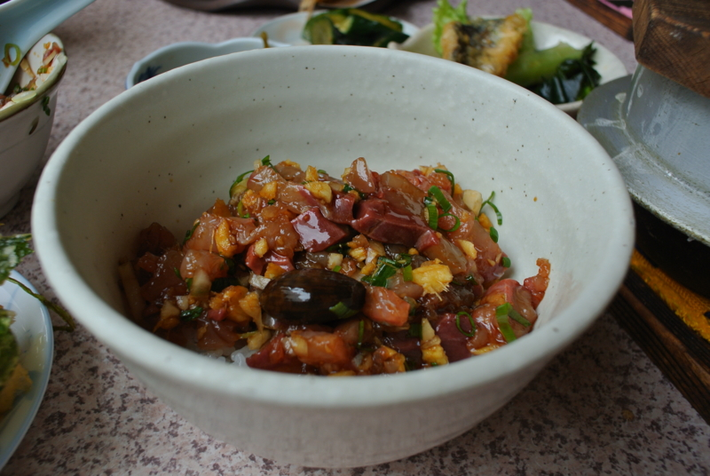
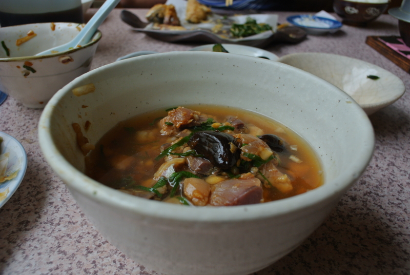
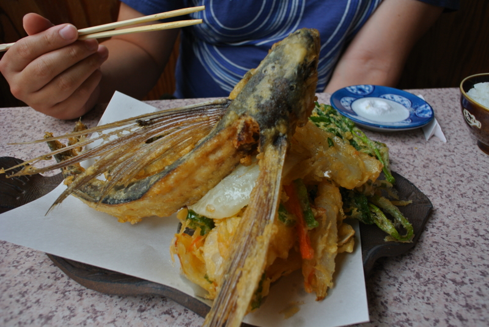

二度美味しい。
執筆日時：
続き。お昼ごはんは、「さくら」で食べた。バイクで西伊豆に来る人なんかの間では定番かもしれない。
ここは“まご茶漬け”が美味い。

食べ方を間違えるのと怒られるので、軽くレクチャーしよう。あいにくカツオがなかったので、本稿ではアジで説明する。あらかじめご容赦願いたい。

まず、アジにニンニク醤油をタップリかける。口が臭くなっても構わないならば、ニンニクのカケラも丸ごと投入することをおすすめする。

ご飯を半分、その上にアジを半分だけよそう。ニンニク醤油をかけすぎないように。

このままもりもり美味しくいただきましょう。食べる間はご飯の釜にはフタをしておくこと。

食べ終わったら、残りの半分をよそって、おばちゃんに出汁を頼む。すると、そこに出汁をかけてお茶漬け風にしてくれる。味が薄かったら、ニンニク醤油を足して調節しよう。こっちはさらさら美味しくいただきましょう。
1つのメニューで2度美味しい！

ちなみに、 @subsfn はトビウオを食べていた。こっちはこっちでなかなか、白身がほくほくしていて美味しい。